The problem
“Wait… what's the score?”
Mid-match memory fails everyone. A quick swipe on your wrist tracks points, games, sets, deuce, advantage and tiebreaks automatically — so the count is never in dispute.
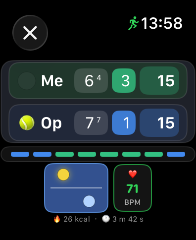
Live scoring, right on your wrist.
…and every point mirrors live onto your iPhone:
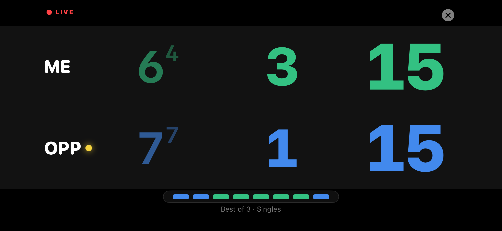
DeuceMate keeps score on your Apple Watch with a flick of the wrist, announces it aloud on your iPhone, and turns every match into clear stats and one-tap AI coaching — so you can stop second-guessing the score and start improving your game.
DeuceMate was built for the realities of weekend tennis — not the pro tour.
The problem
Mid-match memory fails everyone. A quick swipe on your wrist tracks points, games, sets, deuce, advantage and tiebreaks automatically — so the count is never in dispute.
The problem
Server rotation, doubles service order, side-change reminders and a court-end compass are handled for you — no more pausing the match to work out the logistics.
The problem
Guesswork ends here. Every match becomes 20+ stats and a coaching prompt you can hand to ChatGPT, Claude or Gemini for honest, specific feedback.
Whatever format your club throws at you, DeuceMate already knows the rules.
Best-of-3, full final set, super tiebreak, quick four, and perpetual modes for practice.
Full four-player service rotation in doubles, tracked automatically every game.
Roll back to any point with the complete game state restored — score, server and all.
“Check Changeover” reads the watch compass to show which end to take. No GPS.
Your iPhone calls the score out loud, umpire-style, while the app is open courtside.
Optional HealthKit workout adds live HR, calories, distance and win-rate by HR zone.
The instant a point is over it's on your iPhone — a full stats breakdown, a point-by-point momentum timeline, and coaching you can act on.
A clear you-vs-opponent breakdown of where the match was really won and lost.
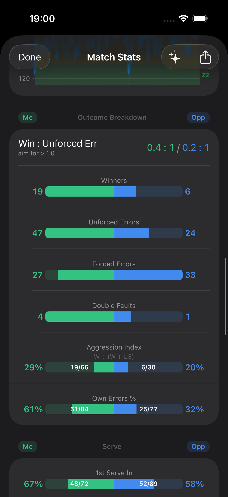
An interactive timeline plots every point, with optional heart-rate and step overlays so you can feel the match again.
💡 The deeper outcome & rally-depth analysis switches on with Track Point Outcome — just 2 extra taps per point, and a wealth of performance insight is unleashed.
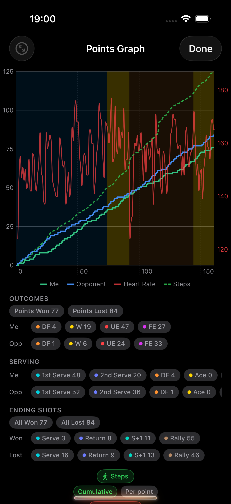
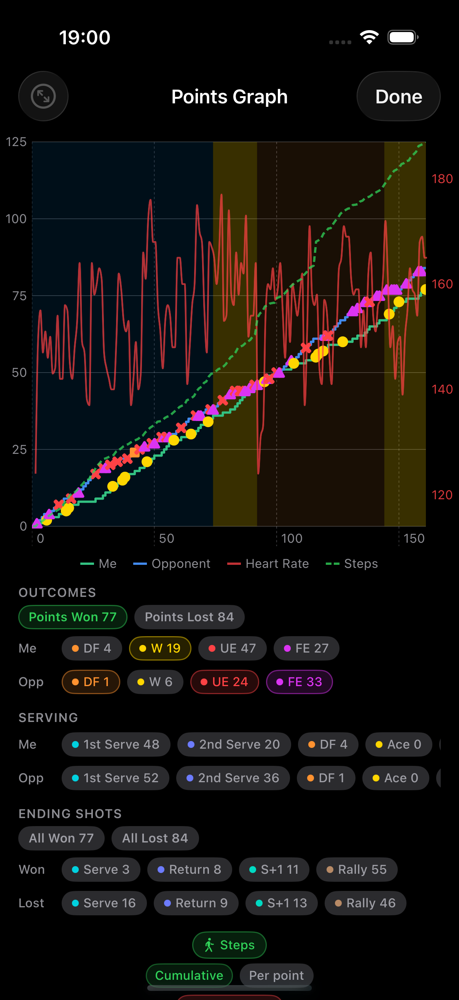
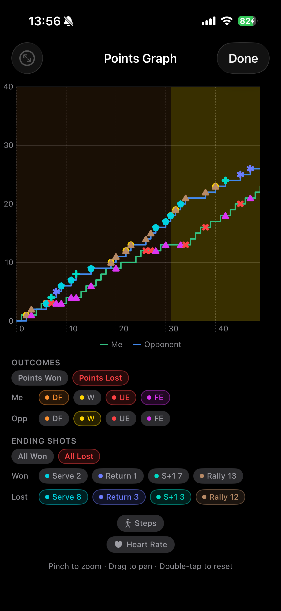
PulseCoach overlays your Apple Watch heart rate on the match and shows how your points are won relative to physical exertion — so you can tell controlled tennis from sheer effort, and see where your game could be more efficient.
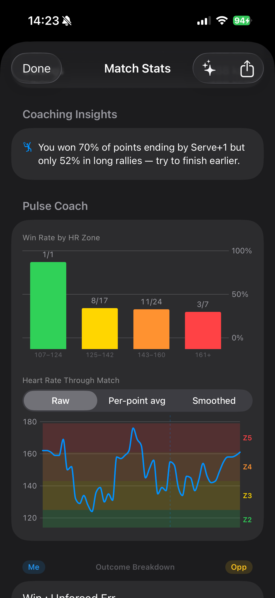
One tap turns your match into a coaching brief for ChatGPT, Claude or Gemini — honest, specific, and available the second you walk off court.
DeuceMate writes a prompt scoped to your level (beginner, intermediate or club) and packs in every stat and the full point-by-point record — patterns a courtside memory simply can't hold.
The single most costly problem, pulled straight from the numbers.
One thing going well — cited with the stat that proves it.
Practical in-match adjustments you can make next time out.
A single targeted drill — doable on a public court, no coach required.
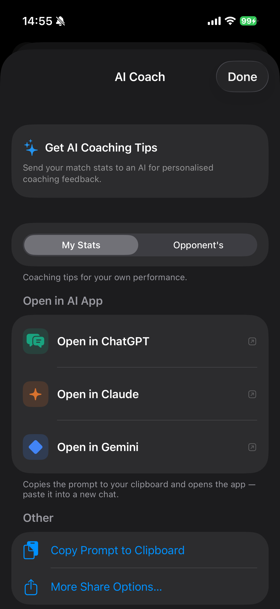
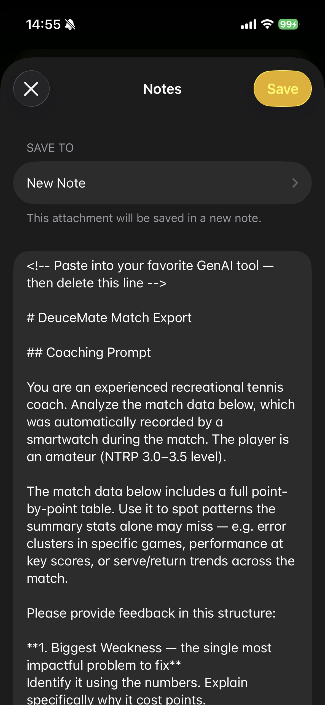
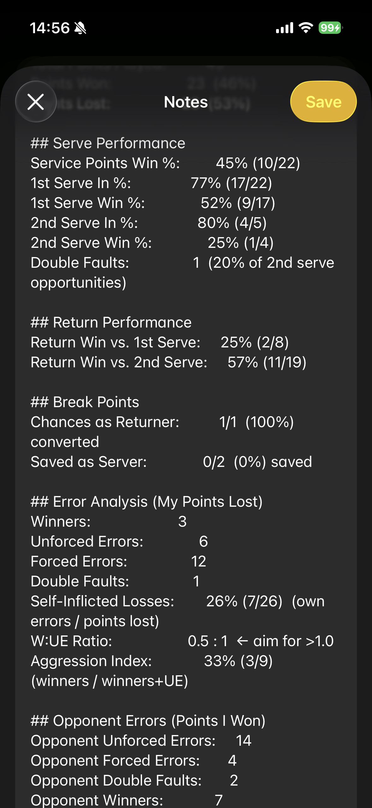
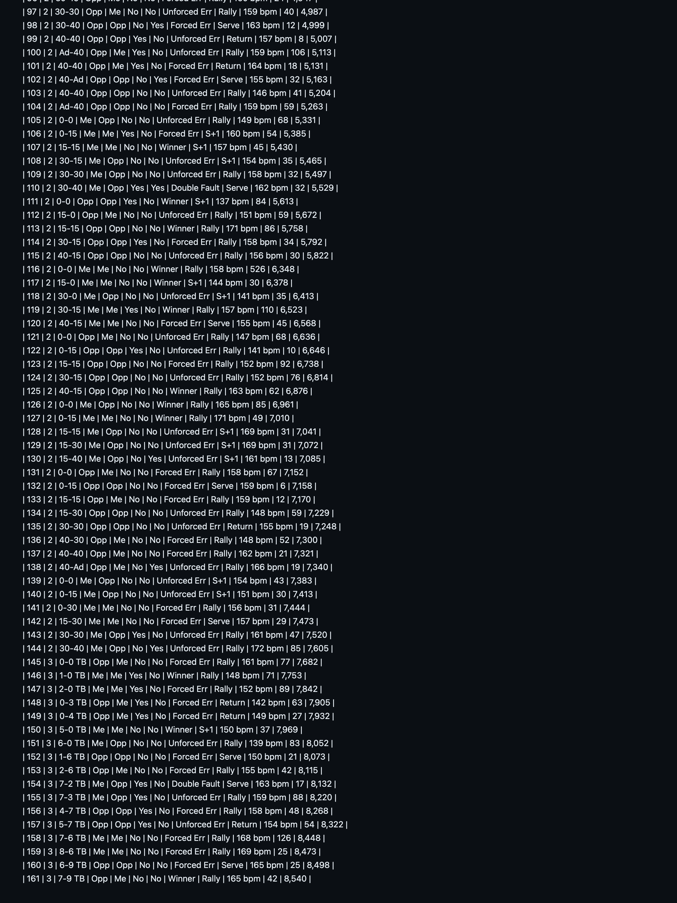
Five court-inspired themes, so the app feels right at home wherever you're playing — from red clay to a floodlit night match. Pick one; it syncs across your Watch and iPhone.
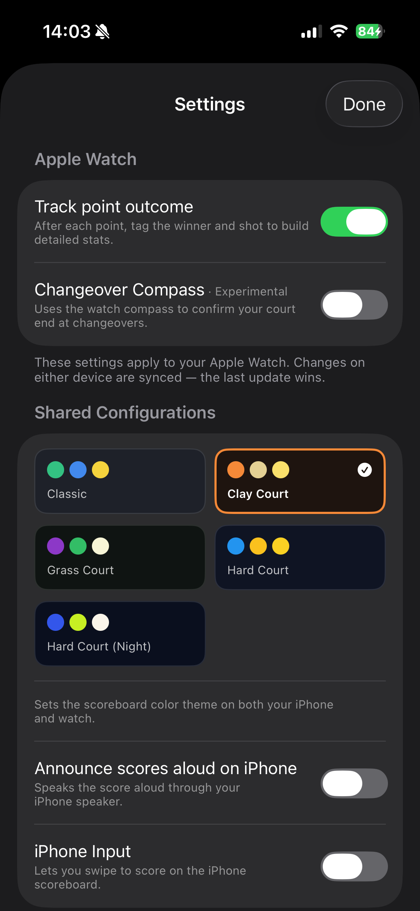
No account. No analytics. No servers. DeuceMate makes no network requests of its own — your data lives on your devices.
Watch ↔ iPhone sync uses Apple's WatchConnectivity (peer-to-peer, no cloud). HealthKit and compass data are used on-device only and never transmitted. Read the full privacy policy.
More questions? Visit the full support page.
DeuceMate is an iPhone app with a bundled Apple Watch app. Free forever, no ads, no tracking — just the score, the stats, and a coach in your pocket.
Pending App Store submission · iOS 17+ · watchOS 9+ · Apple Watch Series 4 or later, SE, or Ultra
Play the actual watch scorer in your browser: tap or swipe to score across all six formats.